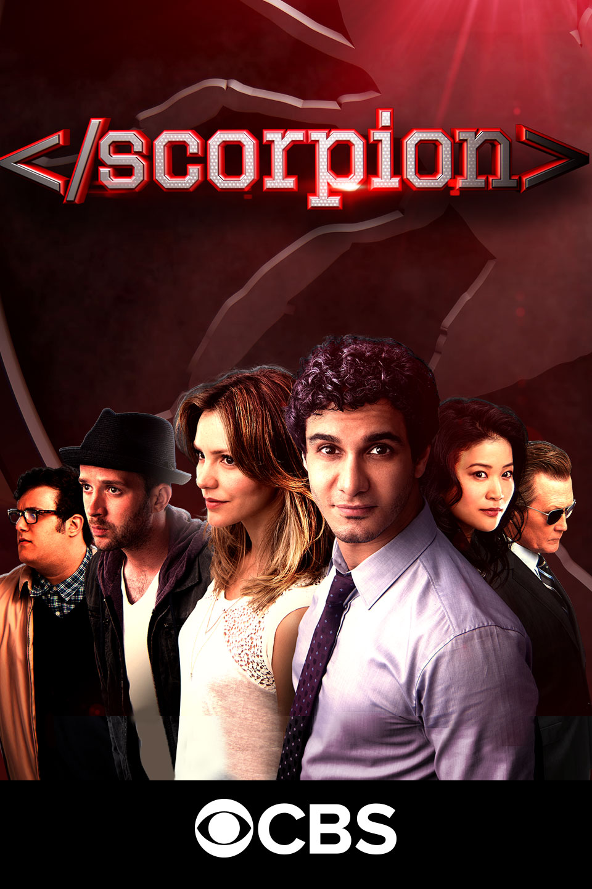

|  | Scorpion | |
|---|---|---|
| An eccentric genius forms an international network of super-geniuses to act as the last line of defense against the complicated threats of the modern world. | ||
| Based on the real life of Walter O'Brien, a genius with an IQ of 197. Walter is asked by Homeland Security to put together a special group of gifted individuals to troubleshoot the most difficult problems that the US & the world may encounter. Written by Blair. | ||
|
Release Dates:
Season 1 - 2014 | Season 2 - 2015 Season 3 - 2016 | Season 4 - 2017 |
IMDb Rate: 7.1/10 | |
| Action , Crime , Drama | TV Series | ||